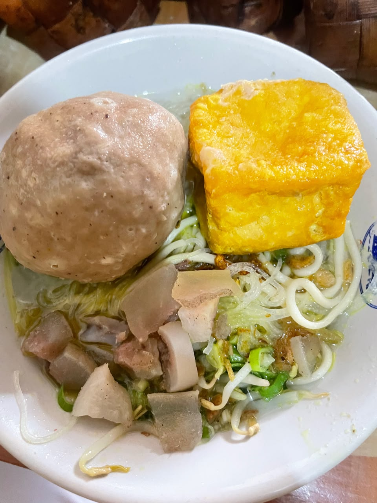
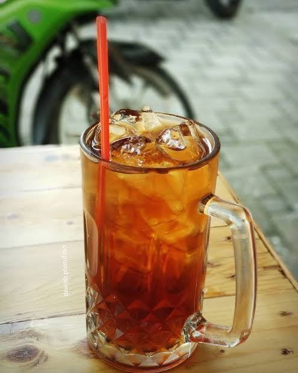
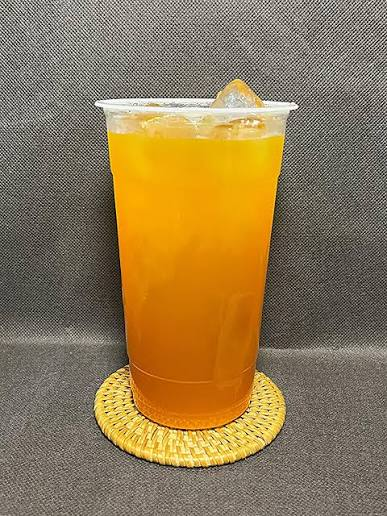

Baso Halus Kecil
Porsi hemat baso halus yang lembut dan kenyal, cocok untuk jajan anak atau camilan sore. Kuah kaldu tetap sepenuhnya.
Rp 11.000Pesan
Kuah kaldu sapi berrempah kuat yang direbus 8 jam, baso berurat yang digiling fresh setiap dini hari. Lebih dari 10 tahun bertahan — kini bisa dipesan tanpa antre, langsung dari layar Anda.


Baso Solo Sedoyo lahir dari warung sederhana di Jalan Cilolohan, Tasikmalaya, pada 1982. Lewat lebih dari 10 tahun penuh tantangan — dari masa sulit hingga persaingan kuliner yang ketat — kami tetap memegang satu prinsip: rasa tidak boleh kompromi.
Kini proses penjualan kami telah digital sepenuhnya: order kilat lewat WhatsApp, serta tersedia di GoFood, GrabFood, dan ShopeeFood. Warung sederhana, layanan kelas kini.
Resep warisan Solo: tulang sapi direbus 8 jam bersama rempah pilihan — gurih, wangi, dan nendang di setiap seruput.
Ciri khas bakso Solo sejati: padat, kenyal, dengan serat urat yang terasa. Digiling sendiri, bukan baso pabrikan.
Tidak ada stok baso kemarin malam. Daging digiling ulang setiap dini hari — habis, kami giling lagi besok.
Semua harga jujur tanpa biaya tersembunyi. Klik "Pesan" — pesananmu langsung tercatat di WhatsApp kami.
Porsi hemat baso halus yang lembut dan kenyal, cocok untuk jajan anak atau camilan sore. Kuah kaldu tetap sepenuhnya.

Baso urat padat bertekstur khas Solo dalam kuah kaldu gurih berrempah. Porsi pas untuk makan siang.

Baso halus lembut berisi telur puyuh utuh, favorit anak-anak. Kuah kaldu bening tanpa minyak berlebih.

Baso urat berukuran besar dengan serat urat yang terasa jelas di setiap gigitan. Disiram kuah kaldu panas.
 Favorit
Favorit
Baso isi dengan isian melimpah di dalamnya — lembut di luar, gurih dan mengenyangkan di dalam.

Paling LarisMenu signature: paduan baso urat, baso halus, dan baso telor dalam satu mangkuk kuah kaldu sapi berrempah. Taburan bawang goreng & seledri.

Teh manis khas warung Sunda yang menyegarkan — harga bersahabat, rasa yang tak pernah salah.

Minuman jeruk segar kesukaan semua umur — penyedap dahaga paling pas setelah kuah yang pedas.

Teh tubruk melati diseduh pekat, disajikan dengan es batu. Pendamping wajib setiap mangkuk baso.
"Kuah kaldu ini beda. Gurihnya dalam, rempahnya kerasa banget, dan baso uratnya benar-benar berurat. Tiap mampir ke Tasikmalaya, makan di sini wajib hukumnya."
"Pesan lewat GoFood, sampai rumah masih panas dan kuahnya tidak tumpah karena dikemas rapi. Porsinya jujur untuk harganya. Langganan terbentuk."
"Rasanya otentik Solo, sambal uleknya nendang. Catatan kecil: kalau jam makan siang agak lama karena ramai — tapi worth the wait, kok."
"Sudah langganan sejak masih jualan gerobak. Sekarang tinggal chat WhatsApp, pesanan langsung jalan. Tidak nyangka warung kecil bisa serapi ini digitalnya."
"Anak saya yang susah makan bisa dua mangkuk! Baso telornya lembut dan kuahnya tidak berminyak. Sangat direkomendasikan untuk makan keluarga."
"Teh jus dinginnya bikin kangen jaman sekolah. Baso panas plus teh jus dingin-dingin adem... combo paling pas sedunia, cuma dua ribu!"
Warung kami buka setiap hari. Untuk order cepat, WhatsApp adalah jalur tercepat — biasanya balas dalam 5 menit.
Jl. Cilolohan, Kel. Kahuripan, Kec. Tawang,
Tasikmalaya, Jawa Barat 46115
Senin – Minggu, 09.00 – 21.00 WIB
Kitchen terakhir menerima pesanan 20.30 WIB
0895-6346-94438
Lokasi strategis di pusat Kota Tasikmalaya — mudah dijangkau, parkir motor & mobil tersedia.